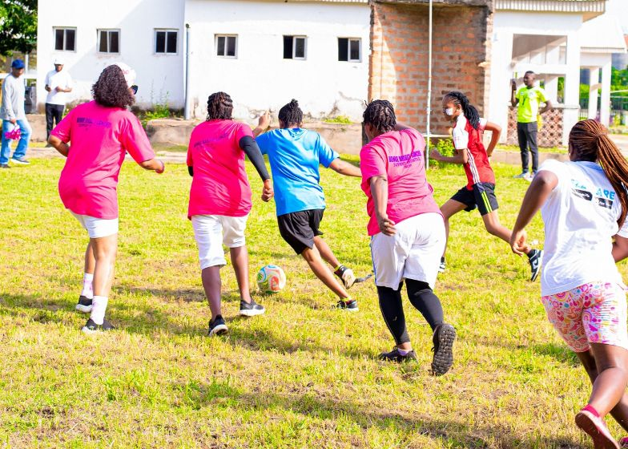
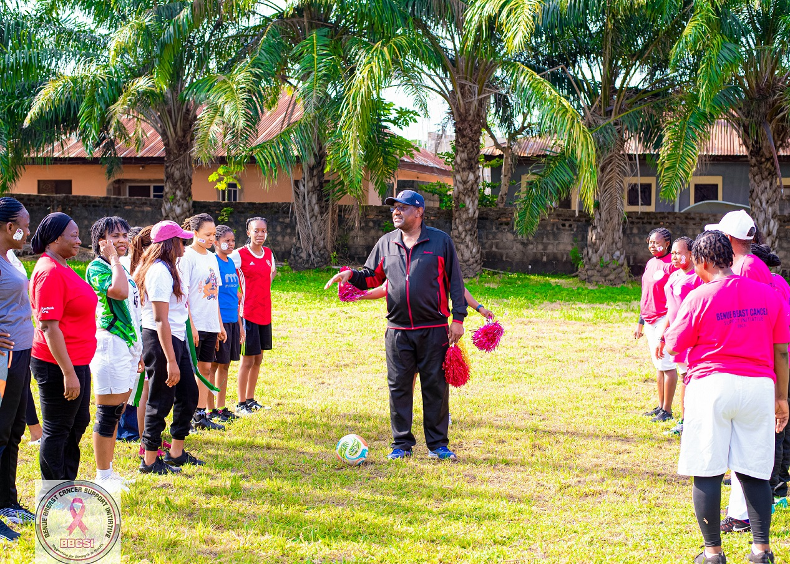
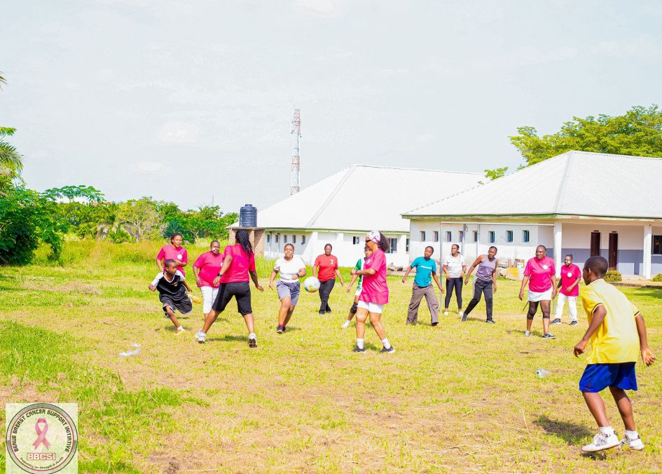
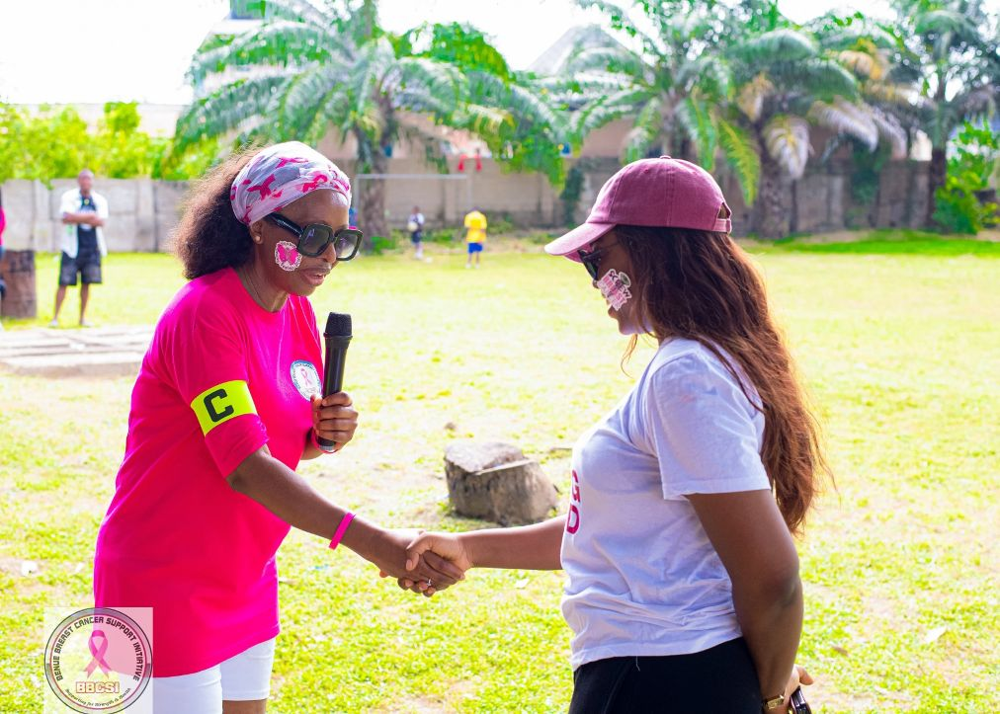
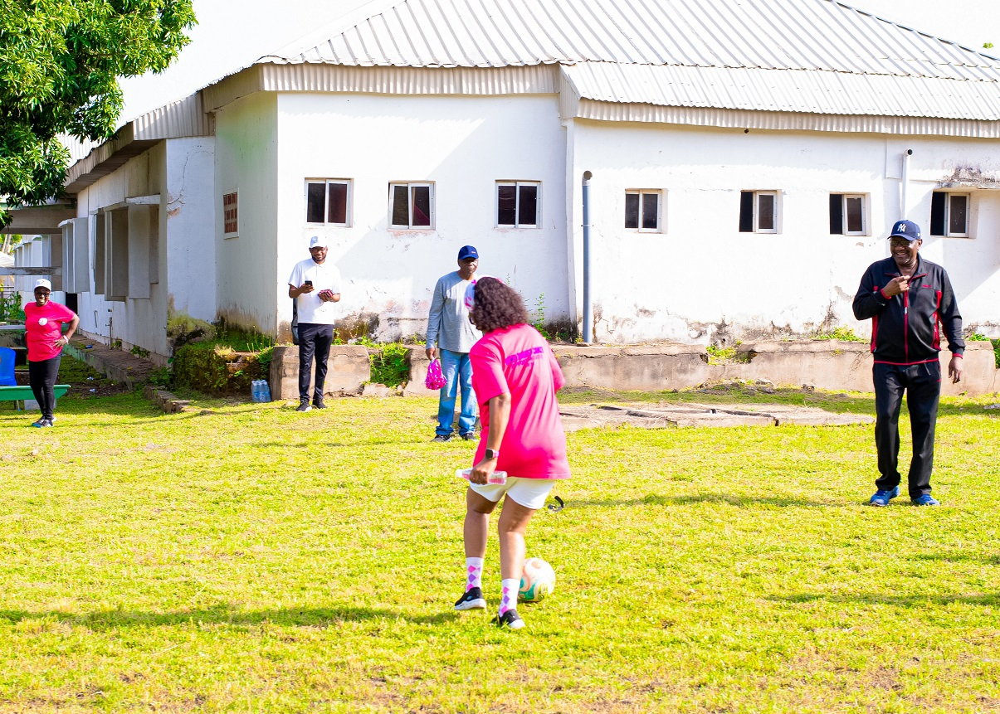
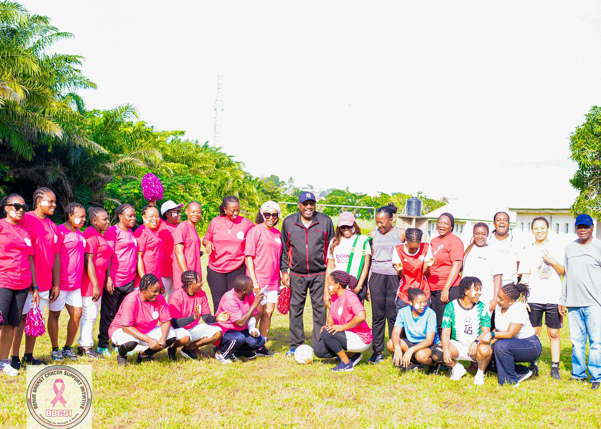

BBCSI Takes on Medical Women in a Novelty Football Match
·
BBCSI
Communications Team

Who says breast cancer advocacy must always be about seminars, sensitisation campaigns and hospital visits? Day Six of the 10th anniversary celebration of the Benue Breast Cancer Support Initiative (BBCSI) brought a refreshing blend of sports, laughter, friendship and healthy competition as BBCSI faced the Benue Medical Women’s Association of Nigeria (MWAN) in an exciting novelty football match.
The match was organised to promote camaraderie, encourage physical activity and provide an opportunity for members of both organisations to unwind while celebrating a shared commitment to health and community well-being. What began as a friendly sporting encounter turned into an unexpectedly high-profile gathering, with several distinguished personalities in attendance.
A Novelty Match with Distinguished Guests
The occasion attracted an impressive array of dignitaries who came out to identify with the organisations and share in the excitement of the anniversary celebration. Among those present were:
- Federal Commissioners of the Revenue Mobilisation, Allocation and Fiscal Commission (RMAFC), representing Akwa Ibom (Barr. Imo Effiong Akpan), Benue (Ambassador Steve Ugbah) and Ebonyi State (Hon. Henry Nduka Awuregu)
- The Honourable Commissioner for Women’s Affairs, Benue State (Hon. Therese Ikwue)
- A Senior Special Assistant to the Executive Governor of Benue State on Policy Coordination and Cabinet Affairs (Dr. Sam Yua)
- A Judge of the Benue State High Court (Mrs. Franca Yuwa, Esq.)
Their presence added colour and significance to the occasion, demonstrating the importance of supporting initiatives that promote health, solidarity and community engagement.
In an interesting twist, the Federal Commissioner representing Benue State took on the responsibility of officiating as referee for the match, while the Senior Special Assistant to the Benue State Governor served as the linesman. It was certainly not an everyday sight to see such distinguished personalities take up match-officiating duties!
The Match: Medical Women Take the Day!
With the dignitaries and supporters cheering from the sidelines, both teams took to the field ready for a friendly but competitive encounter. BBCSI and the Medical Women of MWAN displayed enthusiasm, determination and plenty of sporting spirit as the match got underway. The Medical Women proved to have the upper hand, eventually securing a 2–1 victory over BBCSI.
Despite the defeat, the BBCSI team put up a spirited performance, scoring a goal and ensuring that the encounter remained competitive until the final whistle. The Medical Women deserved their victory, but BBCSI certainly won in the areas of friendship, sportsmanship and anniversary celebration!




More Than Football: Celebrating Health and Togetherness
Beyond the goals, tackles and friendly rivalry, the novelty match carried a deeper message. Physical activity is an important component of a healthy lifestyle, and sporting events provide opportunities to encourage movement, strengthen relationships and promote general well-being. For BBCSI, the match also represented the importance of building bridges with other partner organisations working within the health sector.
The relationship between BBCSI and MWAN reflects a shared interest in promoting health awareness and improving the well-being of women and communities in Benue State. The encounter provided a relaxed atmosphere for networking, interaction and the strengthening of professional and personal relationships.
A Memorable Day for Everyone
The atmosphere throughout the event was lively, with participants and spectators enjoying the game and celebrating the spirit of togetherness. The presence of the distinguished guests, the unusual combination of high-profile match officials and the friendly competition between the two teams made the day particularly memorable.
There may have been winners and losers on the scoreboard, but the real victory was the spirit of unity, friendship and shared purpose that defined the occasion.

Ten Years of Impact, One Community, Many Reasons to Celebrate
As BBCSI marks its first decade, the novelty football match serves as a reminder that building a strong organisation also involves creating meaningful relationships, celebrating shared achievements and finding joyful ways to connect with others. The 2–1 scoreline may have favoured the Medical Women, but the memories created on the field belonged to everyone.
Congratulations to the Medical Women on their well-deserved victory, and kudos to Team BBCSI for putting up a good fight! At BBCSI, we believe that while the fight against breast cancer requires courage and commitment, the journey can also be filled with friendship, laughter and unforgettable moments.
Gratitude: BBCSI is grateful to the Hearts & Minds School for providing their school field as the venue for the match.